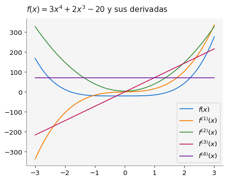
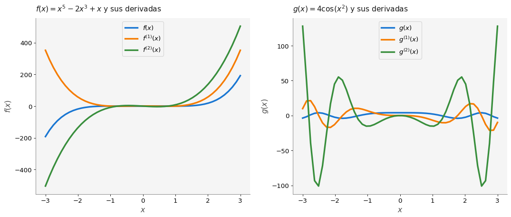
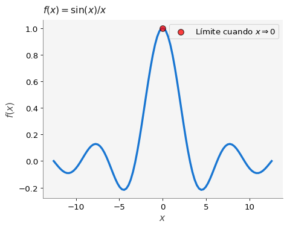
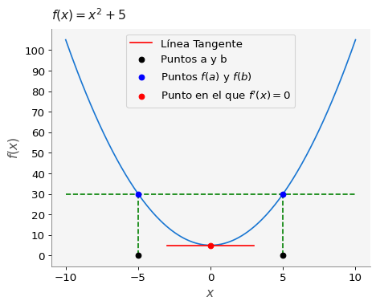

# Importamos todas las bibliotecas a usar
import matplotlib.pyplot as plt
import numpy as np
import pandas as pd
import sympy as sym
import macti.visual
from macti.evaluation import *1 Repaso de cálculo: derivadas
Objetivo general - Realizar ejercicios de derivadas en una variable.
MACTI-Analisis_Numerico_01 by Luis M. de la Cruz is licensed under Attribution-ShareAlike 4.0 International


Trabajo realizado con el apoyo del Programa UNAM-DGAPA-PAPIME PE101922
quizz = Quizz('q1', 'notebooks', 'local')1.1 Ejercicios.
Calcula las derivadas de las funciones descritas siguiendo las reglas del apartado Reglas de derivación. Deberás escribir tu respuesta matemáticamente usando notación de Python en la variable respuesta.
Por ejemplo la para escribir \(4x^{m-1} + \cos^2(x)\) deberás escribir:
respuesta = 4 * x**(m-1) + sym.cos(x)**21.1.1 1. Potencias:
- \(f(x) = x^{5}, f'(x) = ¿?\)
# Definimos el símbolo x
x = sym.symbols('x')
# Escribe tu respuesta como sigue
# respuesta = ...
### BEGIN SOLUTION
respuesta = 5*x**4
file_answer = FileAnswer()
file_answer.write('1a', str(respuesta))
### END SOLUTION
display(respuesta)El directorio :/home/jovyan/macti_notes/notebooks/.ans/Derivada/ ya existe
Respuestas y retroalimentación almacenadas.\(\displaystyle 5 x^{4}\)
quizz.eval_expression('1a', respuesta)----------------------------------------
1a | Tu respuesta:
es correcta.
----------------------------------------\(\displaystyle 5 x^{4}\)
- \(f(x) = x^m, f'(x)= ¿?\)
# Definimos el símbolo m
m = sym.symbols('m')
# Escribe tu respuesta como sigue
# respuesta = ...
### BEGIN SOLUTION
respuesta = m * x**(m-1)
file_answer.write('1b', str(respuesta))
### END SOLUTION
display(respuesta)\(\displaystyle m x^{m - 1}\)
quizz.eval_expression('1b', respuesta)----------------------------------------
1b | Tu respuesta:
es correcta.
----------------------------------------\(\displaystyle m x^{m - 1}\)
- \(f(x) = \pi^{435}, f^\prime(x)= ¿?\)
# Escribe tu respuesta como sigue
# respuesta = ...
### BEGIN SOLUTION
respuesta = 0
file_answer.write('2a', str(respuesta))
### END SOLUTION
El directorio :/home/jovyan/macti_notes/notebooks/.ans/Derivada/ ya existe
Respuestas y retroalimentación almacenadas.0quizz.eval_expression('2a', respuesta)----------------------------------------
2a | Tu respuesta:
es correcta.
----------------------------------------0- \(f(x) = e^{\pi}, f'(x)= ¿?\)
# Escribe tu respuesta como sigue
# respuesta = ...
### BEGIN SOLUTION
respuesta = 0
file_answer.write('2b', str(respuesta))
### END SOLUTION
display(respuesta)0quizz.eval_expression('2b', respuesta)----------------------------------------
2b | Tu respuesta:
es correcta.
----------------------------------------0### 3. Multiplicación por una constante
- \(f(x) = 10x^{4}, f'(x)= ¿?\)
# Escribe tu respuesta como sigue
# respuesta = ...
### BEGIN SOLUTION
respuesta = 40 * x ** 3
file_answer.write('3a', str(respuesta))
### END SOLUTION
display(respuesta)El directorio :/home/jovyan/macti_notes/notebooks/.ans/Derivada/ ya existe
Respuestas y retroalimentación almacenadas.\(\displaystyle 40 x^{3}\)
quizz.eval_expression('3a', respuesta)----------------------------------------
3a | Tu respuesta:
es correcta.
----------------------------------------\(\displaystyle 40 x^{3}\)
- \(f(x) = Ax^{n}, f'(x) = ¿?\)
# Definimos los símbolos A y n
A, n = sy.symbols('A n')
# Escribe tu respuesta como sigue
# respuesta = ...
### BEGIN SOLUTION
respuesta = A * n * x ** (n-1)
file_answer.write('3b', str(respuesta))
### END SOLUTION
display(respuesta)El directorio :/home/jovyan/macti_notes/notebooks/.ans/Derivada/ ya existe
Respuestas y retroalimentación almacenadas.\(\displaystyle A n x^{n - 1}\)
quizz.eval_expression('3b', respuesta)----------------------------------------
3b | Tu respuesta:
es correcta.
----------------------------------------\(\displaystyle A n x^{n - 1}\)
- \(f(x) = x^{2}+x+1, f'(x) = ¿?\)
# Escribe tu respuesta como sigue
# respuesta = ...
### BEGIN SOLUTION
respuesta = 2*x + 1
file_answer.write('4a', str(respuesta))
### END SOLUTION
display(respuesta)El directorio :/home/jovyan/macti_notes/notebooks/.ans/Derivada/ ya existe
Respuestas y retroalimentación almacenadas.\(\displaystyle 2 x + 1\)
quizz.eval_expression('4a', respuesta)----------------------------------------
4a | Tu respuesta:
es correcta.
----------------------------------------\(\displaystyle 2 x + 1\)
- \(f(x) = \sin(x)-\cos(x), f'(x) = ¿?\)
# Escribe tu respuesta como sigue
# respuesta = ...
### BEGIN SOLUTION
respuesta = sy.cos(x) + sy.sin(x)
file_answer.write('4b', str(respuesta))
### END SOLUTION
display(respuesta)El directorio :/home/jovyan/macti_notes/notebooks/.ans/Derivada/ ya existe
Respuestas y retroalimentación almacenadas.\(\displaystyle \sin{\left(x \right)} + \cos{\left(x \right)}\)
quizz.eval_expression('4b', respuesta)----------------------------------------
4b | Tu respuesta:
es correcta.
----------------------------------------\(\displaystyle \sin{\left(x \right)} + \cos{\left(x \right)}\)
- \(f(x) = Ax^{m}-Bx^{n}+C, f'(x) = ¿?\)
# Definimos los símbolos B y C
B, C = sy.symbols('B C')
# Escribe tu respuesta como sigue
# respuesta = ...
### BEGIN SOLUTION
respuesta = A * m * x ** (m-1) - B * n * x ** (n-1)
file_answer.write('4c', str(respuesta))
### END SOLUTION
display(respuesta)El directorio :/home/jovyan/macti_notes/notebooks/.ans/Derivada/ ya existe
Respuestas y retroalimentación almacenadas.\(\displaystyle A m x^{m - 1} - B n x^{n - 1}\)
quizz.eval_expression('4c', respuesta)----------------------------------------
4c | Tu respuesta:
es correcta.
----------------------------------------\(\displaystyle A m x^{m - 1} - B n x^{n - 1}\)
NOTA:Reduce la solucion a su mínima expresion
- \(f(x) = (x^4)( x^{-2}), f'(x) = ¿?\)
# Escribe tu respuesta como sigue
# respuesta = ...
### BEGIN SOLUTION
respuesta = 2 * x
file_answer.write('5a', str(respuesta))
### END SOLUTION
display(respuesta)El directorio :/home/jovyan/macti_notes/notebooks/.ans/Derivada/ ya existe
Respuestas y retroalimentación almacenadas.\(\displaystyle 2 x\)
quizz.eval_expression('5a', respuesta)----------------------------------------
5a | Tu respuesta:
es correcta.
----------------------------------------\(\displaystyle 2 x\)
- \(f(x) = \sin(x)\cos(x), f'(x) = ¿?\)
# Escribe tu respuesta como sigue
# respuesta = ...
### BEGIN SOLUTION
respuesta = -sy.sin(x)**2 + sy.cos(x)**2
file_answer.write('5b', str(respuesta))
### END SOLUTION
display(respuesta)El directorio :/home/jovyan/macti_notes/notebooks/.ans/Derivada/ ya existe
Respuestas y retroalimentación almacenadas.\(\displaystyle - \sin^{2}{\left(x \right)} + \cos^{2}{\left(x \right)}\)
quizz.eval_expression('5b', respuesta)----------------------------------------
5b | Tu respuesta:
es correcta.
----------------------------------------\(\displaystyle - \sin^{2}{\left(x \right)} + \cos^{2}{\left(x \right)}\)
Nota: Reduce la expresión del numerador
Formato: ( f(x) )/( g(x) )
- \(f(x) = \dfrac{\sin(x)}{x}, f'(x) = ¿?\)
# Escribe tu respuesta como sigue
# respuesta = ...
### BEGIN SOLUTION
respuesta = sy.cos(x) / x - sy.sin(x) / x**2
file_answer.write('6a', str(respuesta))
### END SOLUTION
display(respuesta)El directorio :/home/jovyan/macti_notes/notebooks/.ans/Derivada/ ya existe
Respuestas y retroalimentación almacenadas.\(\displaystyle \frac{\cos{\left(x \right)}}{x} - \frac{\sin{\left(x \right)}}{x^{2}}\)
quizz.eval_expression('6a', respuesta)----------------------------------------
6a | Tu respuesta:
es correcta.
----------------------------------------\(\displaystyle \frac{\cos{\left(x \right)}}{x} - \frac{\sin{\left(x \right)}}{x^{2}}\)
- \(f(x) = \dfrac{1}{x^2+x+1}, f'(x) = ¿?\)
# Escribe tu respuesta como sigue
# respuesta = ...
### BEGIN SOLUTION
respuesta = (-2*x-1) / (x**2 + x + 1) ** 2
file_answer.write('6b', str(respuesta))
### END SOLUTION
display(respuesta)El directorio :/home/jovyan/macti_notes/notebooks/.ans/Derivada/ ya existe
Respuestas y retroalimentación almacenadas.\(\displaystyle \frac{- 2 x - 1}{\left(x^{2} + x + 1\right)^{2}}\)
quizz.eval_expression('6b', respuesta)----------------------------------------
6b | Tu respuesta:
es correcta.
----------------------------------------\(\displaystyle \frac{- 2 x - 1}{\left(x^{2} + x + 1\right)^{2}}\)
- \(f(x) = (5x^2 + 2x)^{2}, f'(x) = ¿?\)
# Escribe tu respuesta como sigue
# respuesta = ...
### BEGIN SOLUTION
respuesta = (20*x+4)*(5*x**2+2*x)
file_answer.write('7a', str(respuesta))
### END SOLUTION
display(respuesta)El directorio :/home/jovyan/macti_notes/notebooks/.ans/Derivada/ ya existe
Respuestas y retroalimentación almacenadas.\(\displaystyle \left(20 x + 4\right) \left(5 x^{2} + 2 x\right)\)
quizz.eval_expression('7a', respuesta)----------------------------------------
7a | Tu respuesta:
es correcta.
----------------------------------------\(\displaystyle \left(20 x + 4\right) \left(5 x^{2} + 2 x\right)\)
- \(f(x) = \cos(x^2 +3), f'(x) = ¿?\)
# Escribe tu respuesta como sigue
# respuesta = ...
### BEGIN SOLUTION
respuesta = -2*x*sy.sin(x**2+3)
file_answer.write('7b', str(respuesta))
### END SOLUTION
display(respuesta)El directorio :/home/jovyan/macti_notes/notebooks/.ans/Derivada/ ya existe
Respuestas y retroalimentación almacenadas.\(\displaystyle - 2 x \sin{\left(x^{2} + 3 \right)}\)
quizz.eval_expression('7b', respuesta)----------------------------------------
7b | Tu respuesta:
es correcta.
----------------------------------------\(\displaystyle - 2 x \sin{\left(x^{2} + 3 \right)}\)
### 8. Derivadas de alto orden
Calcular la primera, segunda, tercera y cuarta derivada de \(f(x)= 3x^4 + 2x^2 - 20\).
- \(f(x) = 3x^4 + 2x^2 - 20, f'(x) = ¿?\)
# Escribe tu respuesta como sigue
# respuesta = ...
### BEGIN SOLUTION
respuesta = 12 * x**3 + 4*x
file_answer.write('8a', str(respuesta))
### END SOLUTION
display(respuesta)El directorio :/home/jovyan/macti_notes/notebooks/.ans/Derivada/ ya existe
Respuestas y retroalimentación almacenadas.\(\displaystyle 12 x^{3} + 4 x\)
quizz.eval_expression('8a', respuesta)----------------------------------------
8a | Tu respuesta:
es correcta.
----------------------------------------\(\displaystyle 12 x^{3} + 4 x\)
- \(f(x) = 3x^4 + 2x^2 - 20, f''(x) = ¿?\)
# Escribe tu respuesta como sigue
# respuesta = ...
### BEGIN SOLUTION
respuesta = 36 * x**2 + 4
file_answer.write('8b', str(respuesta))
### END SOLUTION
display(respuesta)El directorio :/home/jovyan/macti_notes/notebooks/.ans/Derivada/ ya existe
Respuestas y retroalimentación almacenadas.\(\displaystyle 36 x^{2} + 4\)
quizz.eval_expression('8b', respuesta)----------------------------------------
8b | Tu respuesta:
es correcta.
----------------------------------------\(\displaystyle 36 x^{2} + 4\)
- \(f(x) = 3x^4 + 2x^2 - 20, f'''(x) = ¿?\)
# Escribe tu respuesta como sigue
# respuesta = ...
### BEGIN SOLUTION
respuesta = 72 * x
file_answer.write('8c', str(respuesta))
### END SOLUTION
display(respuesta)El directorio :/home/jovyan/macti_notes/notebooks/.ans/Derivada/ ya existe
Respuestas y retroalimentación almacenadas.\(\displaystyle 72 x\)
quizz.eval_expression('8c', respuesta)----------------------------------------
8c | Tu respuesta:
es correcta.
----------------------------------------\(\displaystyle 72 x\)
- \(f(x) = 3x^4 + 2x^2 - 20, f''''(x) = ¿?\)
# Escribe tu respuesta como sigue
# respuesta = ...
### BEGIN SOLUTION
respuesta = 72
file_answer.write('8d', str(respuesta))
### END SOLUTION
display(respuesta)El directorio :/home/jovyan/macti_notes/notebooks/.ans/Derivada/ ya existe
Respuestas y retroalimentación almacenadas.72quizz.eval_expression('8d', respuesta)----------------------------------------
8d | Tu respuesta:
es correcta.
----------------------------------------72Realiza las gráficas de las cuatro derivadas y observa su comportamiento.
# Definimos la función y sus cuatro derivadas
f = lambda x: 3*x**4 + 2*x**3 -20
### BEGIN SOLUTION
f1 = lambda x: 12*x**3 + 4*x
f2 = lambda x: 36*x**2 + 4
f3 = lambda x: 72*x
f4 = lambda x: 72*np.ones(len(x))
### END SOLUTION
# f1 = lambda x: ...
# f2 = lambda x: ...
# f3 = lambda x: ...
# f4 = lambda x: ...
xc = np.linspace(-3, 3, 50) # Codominio de la función
# Graficamos la función y sus derivadas
plt.title('$f(x)=3x^4 + 2x^3 -20$ y sus derivadas')
plt.plot(xc, f(xc), label='$f(x)$')
plt.plot(xc, f1(xc), label='$f^{(1)}(x)$')
plt.plot(xc, f2(xc), label='$f^{(2)}(x)$')
plt.plot(xc, f3(xc), label='$f^{(3)}(x)$')
plt.plot(xc, f4(xc), label='$f^{(4)}(x)$')
plt.legend()
plt.show()
Encuentra la primera y segunda derivada de la siguientes funciones: - a) \(f(x)= x^5 - 2x^3 + x\) - b) \(f(x)= 4 \cos x^2\)
- \(f(x) = x^5 - 2x^3 + x, f'(x) = ¿?\)
# Escribe tu respuesta como sigue
# respuesta = ...
### BEGIN SOLUTION
respuesta = 5*x**4-6*x**2+1
file_answer.write('8e', str(respuesta))
### END SOLUTION
display(respuesta)El directorio :/home/jovyan/macti_notes/notebooks/.ans/Derivada/ ya existe
Respuestas y retroalimentación almacenadas.\(\displaystyle 5 x^{4} - 6 x^{2} + 1\)
quizz.eval_expression('8e', respuesta)----------------------------------------
8e | Tu respuesta:
es correcta.
----------------------------------------\(\displaystyle 5 x^{4} - 6 x^{2} + 1\)
- \(f(x) = x^5 - 2x^3 + x, f''(x) = ¿?\)
# Escribe tu respuesta como sigue
# respuesta = ...
### BEGIN SOLUTION
respuesta = 20*x**3-12*x
file_answer.write('8f', str(respuesta))
### END SOLUTION
display(respuesta)El directorio :/home/jovyan/macti_notes/notebooks/.ans/Derivada/ ya existe
Respuestas y retroalimentación almacenadas.\(\displaystyle 20 x^{3} - 12 x\)
quizz.eval_expression('8f', respuesta)----------------------------------------
8f | Tu respuesta:
es correcta.
----------------------------------------\(\displaystyle 20 x^{3} - 12 x\)
- \(f(x) = 4 \cos x^2, f'(x) = ¿?\)
# Escribe tu respuesta como sigue
# respuesta = ...
### BEGIN SOLUTION
respuesta = -8 * x * sy.sin(x**2)
file_answer.write('8g', str(respuesta))
### END SOLUTION
display(respuesta)El directorio :/home/jovyan/macti_notes/notebooks/.ans/Derivada/ ya existe
Respuestas y retroalimentación almacenadas.\(\displaystyle - 8 x \sin{\left(x^{2} \right)}\)
quizz.eval_expression('8g', respuesta)----------------------------------------
8g | Tu respuesta:
es correcta.
----------------------------------------\(\displaystyle - 8 x \sin{\left(x^{2} \right)}\)
- \(f(x) = 4 \cos x^2, f''(x) = ¿?\)
# Escribe tu respuesta como sigue
# respuesta = ...
### BEGIN SOLUTION
respuesta = -8*sy.sin(x**2) - 16*x**2*sy.cos(x**2)
file_answer.write('8h', str(respuesta))
### END SOLUTION
display(respuesta)El directorio :/home/jovyan/macti_notes/notebooks/.ans/Derivada/ ya existe
Respuestas y retroalimentación almacenadas.\(\displaystyle - 16 x^{2} \cos{\left(x^{2} \right)} - 8 \sin{\left(x^{2} \right)}\)
quizz.eval_expression('8h', respuesta)----------------------------------------
8h | Tu respuesta:
es correcta.
----------------------------------------\(\displaystyle - 16 x^{2} \cos{\left(x^{2} \right)} - 8 \sin{\left(x^{2} \right)}\)
Realiza las gráficas de las dos funciones y de su primera y segunda derivadas.
f = lambda x: x**5 - 2*x**3 + x
### BEGIN SOLUTION
f1 = lambda x: 5*x**4 -6*x**2 + 1
f2 = lambda x: 20*x**3 - 12*x
### END SOLUTION
# f1 = lambda x: ...
# f2 = lambda x: ...
# Definimos la segunda función y sus derivadas
g = lambda x: 4*np.cos(x**2)
### BEGIN SOLUTION
g1 = lambda x: -8*x*np.sin(x**2)
g2 = lambda x: -8*np.sin(x**2) - 16*x**2*np.cos(x**2)
### END SOLUTION
# g1 = lambda x: ...
# g2 = lambda x: ...
xc = np.linspace(-3, 3, 50) # Codominio de las funciones
# Graficamos las funciones y sus derivadas
plt.figure(figsize=(16,6))
ax1 = plt.subplot(1,2,1)
ax2 = plt.subplot(1,2,2)
ax1.plot(xc, f(xc), label='$f(x)$',lw=3)
ax1.plot(xc, f1(xc), label='$f^{(1)}(x)$',lw=3)
ax1.plot(xc, f2(xc), label='$f^{(2)}(x)$',lw=3)
ax1.legend(loc='upper center')
ax1.set_title('$f(x)=x^5 - 2x^3 + x$ y sus derivadas')
ax1.set_xlabel
ax2.plot(xc, g(xc), label='$g(x)$',lw=3)
ax2.plot(xc, g1(xc), label='$g^{(1)}(x)$',lw=3)
ax2.plot(xc, g2(xc), label='$g^{(2)}(x)$',lw=3)
ax2.legend(loc='upper center')
ax2.set_title('$g(x)=4\cos(x^2)$ y sus derivadas')
ax1.set_xlabel("$x$")
ax1.set_ylabel("$f(x)$")
ax2.set_xlabel("$x$")
ax2.set_ylabel("$g(x)$")
plt.show()
### 9. Aplicación de la regla de L’Hopital
Utilizando la regla de L’Hopital encuentra el límite de \(\displaystyle f(x)=\frac{\sin(x)}{x}\) cuando \(x\) tiende a cero.
Solución.
Al cumplirse las condiciones de la regla podemos asegurar que: \[ \lim_{x \to 0} \frac{\sin (x)}{x} = \lim_{x \to 0} \frac{\sin^\prime(x)}{x^\prime} = \lim_{x \to 0} \frac{\cos(x)}{1}=1\]
f = lambda x: np.sin(x) / x
x = np.linspace(-4*np.pi, 4*np.pi, num=100) # Codominio de la función
# Graficamos la función y el punto (0, f(0))
plt.title('$f(x)=\sin(x) / x$')
plt.ylabel("$f(x)$")
plt.xlabel("$x$")
plt.plot(x, f(x),lw=3)
plt.scatter(0, 1, label='Límite cuando $x \Rightarrow 0$', fc='red', ec='black', alpha=0.75, s=75, zorder=10)
plt.legend()
plt.show()
### 10. Ejemplo del teorema de Rolle. Considere la función \(f(x)= x^2 + 5\), la cual es continúa en todo \(\mathbb{R}\). Tomemos el intervalo \([-5,5]\) y hagamos la gráfica de esta función. Observe en la gráfica que sigue, que se cumplen las condiciones del Teorema de Rolle y por lo tanto es posible encontrar un punto \(c\), punto rojo, donde la derivada es cero (línea roja).
# Dominio e imagen de la gráfica
xc = np.linspace(-10,10,200)
f = lambda i: i**2 + 5
# Configuración de la grafica
plt.xticks(range(-10,11,5))
plt.yticks(range(-10,110,10))
plt.xlabel("$x$",)
plt.ylabel("$f(x)$")
plt.title("$f(x)=x^{2}+5$")
# Función
plt.plot(xc,f(xc))
# Dibujamos algunas líneas en la gráfica
plt.plot(np.linspace(-10,10,2),[f(5)]*2,ls="dashed",color="green")
plt.plot((5,5),(0,f(5)),ls="dashed",color="green")
plt.plot((-5,-5),(0,f(5)),ls="dashed",color="green")
plt.plot((-3,3),(5,5),color="red",label="Línea Tangente")
# Dibujamos algunos puntos en la gráfica
plt.scatter((-5,5),(0,0),color="black",label="Puntos a y b",zorder=5)
plt.scatter((-5,5),(f(-5),f(5)),color="blue",label="Puntos $f(a)$ y $f(b)$",zorder=5)
plt.scatter(0,f(0),color="red",label="Punto en el que $f'(x)=0$",zorder=5)
plt.legend(loc="upper center")
plt.show()
En general no es complicado calcular la derivada de cualquier función y existen reglas para hacerlo más fácil.
Para cualquier número real \(n\) si \(f(x)= x^n\), entonces \[ f^\prime(x) = n x^{n-1} \]
Si \(f(x)=c\) es una función constante, entonces \[ f^\prime(x)=0 \]
Regla de la multiplicación por constante
Si \(c\) es cualquier constante y \(f(x)\) es diferenciable, entonces \(g(x)= c f(x)\) también es diferenciable y su derivada es: \[ g^\prime(x) = c f^\prime(x) \]
Si \(f(x)\) y \(g(x)\) son diferenciables, entonces \(f(x) + g(x)\) y \(f(x) - g(x)\) también son diferenciables y sus derivadas son: \[ [f(x)+ g(x)]^\prime = f^\prime(x) + g^\prime(x) \]
\[ [f(x)- g(x)]^\prime=f^\prime(x) - g^\prime(x) \]
Si \(f(x)\) y \(g(x)\) son funciones diferenciables, entonces \(f(x)g(x)\) es diferenciable y su derivada es: \[ [f(x) g(x)]^\prime= f(x)g^\prime(x) + g(x)f^\prime(x) \]
Si \(f\) y \(g\) son funciones diferenciables y \(g(x) \neq 0\), entonces \(f(x)/g(x)\) es diferenciable y su derivada es: \[ \left[\frac{f(x)}{g(x)} \right]^\prime = \frac{f(x)g^\prime(x)- f^\prime(x)g(x) }{g(x)^2} \]
Si la función \(f(u)\) es diferenciable, donde \(u = g(x)\), y la función \(g(x)\) es diferenciable, entonces la composición \(y=(f \circ g)(x)= f(g(x))\) es diferenciable: \[ f(g(x))^\prime = f^\prime(g(x)) \cdot g^\prime(x) \]
Esta regla es utilizada en caso de indeterminaciones donde \(f(x)\) y \(g(x)\) son dos funciones continuas definidas en el intervalo \([a,b]\), derivables en \((a,b)\) y sea \(c\) perteneciente a \((a,b)\) tal que \(f(c)=g(c)=0\) y \(g^\prime(x) \neq 0\) si \(x \neq c\). Si existe el límite \(L\) de \(f^\prime/g^\prime\) en \(c\), entonces existe el límite de \(f(x)/g(x)\) (en \(c\)) y es igual a \(L\). Por lo tanto: \[ \lim_{x \to c} \frac{f(x)}{g(x)} = \lim_{x \to c} \frac{f^\prime(x)}{g^\prime(x)} = L \]
Derivadas de funciones trigonométricas
\[ \begin{eqnarray} \sin^\prime(x) & = & \cos(x) \\ \cos^\prime(x) & = & -\sin(x) \\ \tan^\prime(x) & = & \sec^2(x) \\ \sec^\prime(x) & = & \sec(x)\tan(x) \\ \cot^\prime(x) & = & -\csc^2(x) \\ \csc^\prime(x) & = & -\csc(x)\cot(x) \end{eqnarray} \]
Derivada la función exponencial
\[ \left[ e^{x} \right]^\prime = e^{x} \]
# Teorema de Rolle : Sea \(a < b\) y suponga que \(f : [a, b] → {\mathbb{R}}\) es derivable en \((a, b)\) y continua en \([a, b]\) y \(f(a) = f(b)\). Entonces \(∃ x_0 ∈ (a, b)\) tal que \(f^\prime(x_0) = 0\)
Lo anterior quiere decir que, dadas las condiciones del teorema, es posible encontrar un punto de la función \(f(x)\) dentro del intervalo \((a,b)\) donde la derivada es cero; en otras palabras, en ese punto de la función la línea tangente es horizontal
Es posible obtener la derivada de la derivada, es decir, si tenemos una función \(f(x)\) cuya derivada es \(f^\prime(x)\), entonces podemos calcular la derivada a esta última función, para obtener \(f^{\prime\prime}(x)\), a esta última función, si es que existe, se le conoce como la segunda derivada de \(f(x)\). También se puede denotar a la segunda derivada com \(f^{(2)}(x)\).
En general, si \(f(x)\) es derivable \(k\) veces, entonces es posible obtener la \(k\)-ésima derivada de dicha función, que se escribe como: \[ \frac{d^kf(x)}{dx^k} = f^{(k)}(x) \]